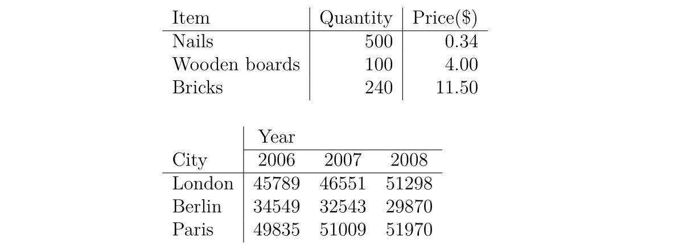

LaTeX 入门
介绍¶
什么是 LaTeX¶
LaTeX（读作/ˈlɑːtɛx/或/ˈleɪtɛx/）是一个让你的文档看起来更专业的排版系统，而不是文字处理器。它尤其适合处理篇幅较长、结构严谨的文档，并且十分擅长处理公式表达。它是免费的软件，对大多数操作系统都适用。
LaTeX 基于 TeX（Donald Knuth 在 1978 年为数字化排版设计的排版系统）。TeX 是一种电脑能够处理的低级语言，但大多数人发现它很难使用。LaTeX 正是为了让它变得更加易用而设计的。目前 LaTeX 的版本是 LaTeX 2e。
如果你习惯于使用微软的 Office Word 处理文档，那么你会觉得 LaTeX 的工作方式让你很不习惯。Word 是典型的“所见即所得”的编辑器，你可以在编排文档的时侯查看到最终的排版效果。但使用 LaTeX 时你并不能方便地查看最终效果，这使得你专注于内容而不是外观的调整。
一个 LaTeX 文档是一个以 .tex 结尾的文本文件，可以使用任意的文本编辑器编辑，比如 Notepad，但对于大多数人而言，使用一个合适的 LaTeX 编辑器会使得编辑的过程容易很多。在编辑的过程中你可以标记文档的结构。完成后你可以进行编译——这意味着将它转化为另一种格式的文档。它支持多种格式，但最常用的是 PDF 文档格式。
在开始之前¶
下面列出在本文中使用到的记号：
- 希望你实施的操作会被打上一个箭头 ；
- 你输入的字符会被装进代码块中；
- 菜单命令与按钮的名称会被标记为 粗体。
一些概念¶
如果需要编写 LaTeX 文档，你需要安装一个「发行版」，常用的发行版有 TeX Live、MikTeX 和适用于 macOS 用户的 MacTeX（实际上是 TeX Live 的 macOS 版本），至于 CTeX 则现在不推荐使用。TeX Live 和 MacTeX 带有几乎所有的 LaTeX 宏包；而 MikTeX 只带有少量必须的宏包，其他宏包将在需要时安装。
TeX Live 和 MikTeX 都带有 TeXworks 编辑器，你也可以安装功能更多的 TeXstudio 编辑器，或者自行配置 Visual Studio Code 或 Notepad++ 等编辑器。下文所使用的编辑器是运行在 Windows 7 上的 TeXworks。
大部分发行版都带有多个引擎，如 pdfTeX 和 XeTeX。对于中文用户，推荐使用 XeTeX 以获得 Unicode 支持。
TeX 有多种格式，如 Plain TeX 和 LaTeX。现在一般使用 LaTeX 格式。所以，你需要使用与你所使用的格式打包在一起的引擎。如对于 pdfTeX，你需要使用 pdfLaTeX，对于 XeTeX 则是 XeLaTeX。
扩展阅读：TeX 引擎、格式、发行版之介绍。
环境配置¶
对于 Windows 用户，你需要下载 TeX Live 或 MikTeX。国内用户可以使用 清华大学 TUNA 镜像站，请点击页面右侧的「获取下载链接」按钮，并选择「应用软件」标签下的「TeX 排版系统」即可下载 TeX Live 或 MikTeX 的安装包，其中 TeX Live 的安装包是一个 ISO 文件，需要挂载后以管理员权限执行 install-tl-advanced.bat。
对于 macOS 用户，清华大学 TUNA 镜像站同样提供 MacTeX 和 macOS 版 MikTeX 的下载。
对于 Linux 用户，如果使用 TeX Live，则同样下载 ISO 文件，执行 install-tl 脚本；如果使用 MikTeX，则按照 官方文档 进行安装。
文档结构¶
基本要素¶
打开 TeXworks。
一个新的文档会被自动打开。
进入 Format 菜单，选择 Line Numbers。
行号并不是要素，但它可以帮助你比较代码与屏幕信息，找到错误。
进入 Format 菜单，选择 Syntax Coloring，然后选择 LaTeX。
语法色彩会高亮代码，使得代码更加易读。
输入以下文字：
1 2 3 4 5 6 7 | \documentclass[a4paper,12pt]{article}
\begin{document}
A sentence of text.
\end{document}
|
\documentclass 命令必须出现在每个 LaTeX 文档的开头。花括号内的文本指定了文档的类型。article 文档类型适合较短的文章，比如期刊文章和短篇报告。其他文档类型包括 report（适用于更长的多章节的文档，比如博士生论文），proc（会议论文集），book 和 beamer。方括号内的文本指定了一些选项——示例中它设置纸张大小为 A4，主要文字大小为 12pt。
\begin{document} 和 \end{document} 命令将你的文本内容包裹起来。任何在 \begin{documnet} 之前的文本都被视为前导命令，会影响整个文档。任何在 \end{document} 之后的文本都会被忽视。
空行不是必要的，但它可以让长的文档更易读。
按下 Save 按扭； 在 Libraries>Documents 中新建一个名为 LaTeX course 文件夹； 将你的文档命名为 Doc1 并将其保存为 TeX document 放在这个文件夹中。
将不同的 LaTeX 文档放在不同的目录下，在编译的时候组合多个文件是一个很好的想法。
确保 typeset 菜单设置为了 xeLaTeX。 点击 Typeset 按扭。
这时你的源文件会被转换为 PDF 文档，这需要花费一定的时间。在编译结束后，TeXworks 的 PDF 查看器会打开并预览生成的文件。PDF 文件会被自动地保存在与 TeX 文档相同的目录下。
处理问题¶
如果在你的文档中存在错误，TeXworks 无法创建 PDF 文档时，Typeset 按扭会变成一个红叉，并且底部的终端输出会保持展开。这时：
点击 Abort typesetting 按扭。 阅读终端输出的内容，最后一行可能会给出行号表示出现错误的位置。 找到文档中对应的行并修复错误。 再次点击 Typeset 按扭尝试编译源文件。
添加文档标题¶
\maketitle 命令可以给文档创建标题。你需要指定文档的标题。如果没有指定日期，就会使用现在的时间，作者是可选的。
在 \begin{document} 和 命令后紧跟着输入以下文本：
1 2 3 4 | \title{My First Document}
\author{My Name}
\date{\today}
\maketitle
|
你的文档现在长成了这样：
1 2 3 4 5 6 7 8 9 10 11 12 | \documentclass[a4paper,12pt]{article}
\begin{document}
\title{My First Document}
\author{My Name}
\date{\today}
\maketitle
A sentence of text.
\end{document}
|
点击 Typeset 按扭，核对生成的 PDF 文档。
要点笔记：
\today是插入当前时间的命令。你也可以输入一个不同的时间，比如\data{November 2013}。- article 文档的正文会紧跟着标题之后在同一页上排版。report 会将标题置为单独的一页。
章节¶
如果需要的话，你可能想将你的文档分为章（Chatpers）、节（Sections）和小节（Subsections）。下列分节命令适用于 article 类型的文档：
\section{...}\subsection{...}\subsubsection{...}\paragraph{...}\subparagraph{...}
花括号内的文本表示章节的标题。对于 report 和 book 类型的文档我们还支持 \chapter{...} 的命令。
将 "A sentence of text." 替换为以下文本：
1 2 3 4 5 6 7 8 9 10 11 12 13 | \section{Introduction}
This is the introduction.
\section{Methods}
\subsection{Stage 1}
The first part of the methods.
\subsection{Stage 2}
The second part of the methods.
\section{Results}
Here are my results.
|
你的文档会变成
1 2 3 4 5 6 7 8 9 10 11 12 13 14 15 16 17 18 19 20 21 22 23 24 | \documentclass[a4paper,12pt]{article}
\begin{document}
\title{My First Document}
\author{My Name}
\date{\today}
\maketitle
\section{Introduction}
This is the introduction.
\section{Methods}
\subsection{Stage 1}
The first part of the methods.
\subsection{Stage 2}
The second part of the methods.
\section{Results}
Here are my results.
\end{document}
|
点击 Typeset 按扭，核对 PDF 文档。应该是长这样的：

创建标签¶
你可以对任意章节命令创建标签，这样他们可以在文档的其他部分被引用。使用 \label{labelname} 对章节创建标签。然后输入 \ref{labelname} 或者 \pageref{labelname} 来引用对应的章节。
在 \subsection{Stage 1} 下面另起一行，输入 \label{sec1}。 在 Results 章节输入 Referring to section \ref{sec1} on page \pageref{sec1}。
你的文档会变成这样：
1 2 3 4 5 6 7 8 9 10 11 12 13 14 15 16 17 18 19 20 21 22 23 24 25 | \documentclass[a4paper,12pt]{article}
\begin{document}
\title{My First Document}
\author{My Name}
\date{\today}
\maketitle
\section{Introduction}
This is the introduction.
\section{Methods}
\subsection{Stage 1}
\label{sec1}
The first part of the methods.
\subsection{Stage 2}
The second part of the methods.
\section{Results}
Here are my results. Referring to section \ref{sec1} on page \pageref{sec1}
\end{document}
|
编译并检查 PDF 文档（你可能需要连续编译两次）：

生成目录（TOC）¶
如果你使用分节命令，那么可以容易地生成一个目录。使用 \tableofcontents 在文档中创建目录。通常我们会在标题的后面建立目录。
你可能也想也想更改页码为罗马数字（i,ii,iii）。这会确保文档的正文从第 1 页开始。页码可以使用 \pagenumbering{...} 在阿拉伯数字和罗马数字见切换。
在 \maketitle 之后输入以下内容：
1 2 3 4 | \pagenumbering{roman}
\tableofcontents
\newpage
\pagenumbering{arabic}
|
\newpage 命令会另起一个页面，这样我们就可以看到 \pagenumbering 命令带来的影响了。你的文档的前 14 行长这样：
1 2 3 4 5 6 7 8 9 10 11 12 13 | \documentclass[a4paper,12pt]{article}
\begin{document}
\title{My First Document}
\author{My Name}
\date{\today}
\maketitle
\pagenumbering{roman}
\tableofcontents
\newpage
\pagenumbering{arabic}
|
编译并核对文档（可能需要多次编译，下文不赘述）。
文档的第一页长这样：
第二页：

文字处理¶
中文字体支持¶
阅读本文学习 LaTeX 的人，首要学会的自然是 LaTeX 的中文字体支持。事实上，让 LaTeX 支持中文字体有许多方法。在此我们仅给出最 简洁 的解决方案：使用 CTeX 宏包。只需要在文档的前导命令部分添加：
1 | \usepackage[UTF8]{ctex}
|
就可以了。在编译文档的时侯使用 xelatex 命令，因为它是支持中文字体的。
字体效果¶
LaTeX 有多种不同的字体效果，在此列举一部分：
1 2 3 4 5 6 7 8 | \textit{words in italics}
\textsl{words slanted}
\textsc{words in smallcaps}
\textbf{words in bold}
\texttt{words in teletype}
\textsf{sans serif words}
\textrm{roman words}
\underline{underlined words}
|
效果如下：

在你的文档中添加更多的文本并尝试各种字体效果。
彩色字体¶
为了让你的文档支持彩色字体，你需要使用包（package）。你可以引用很多包来增强 LaTeX 的排版效果。包引用的命令放置在文档的前导命令的位置（即放在 \begin{document} 命令之前）。使用 \usepackage[options]{package} 来引用包。其中 package 是包的名称，而 options 是指定包的特征的一些参数。
使用 \usepackage{color} 后，我们可以调用常见的颜色：

使用彩色字体的代码为
1 | {\color{colorname}text}
|
其中 colorname 是你想要的颜色的名字，text 是你的彩色文本内容。注意到示例效果中的黄色与白色是有文字背景色的，这个我们同样可以使用 Color 包中的 \colorbox 命令来达到。用法如下：
1 | \colorbox{colorname}{text}
|
在 \begin{document} 前输入 \usepackage{color}。 在文档内容中输入 {\color{red}fire}。 编译并核对 PDF 文档内容。
单词 fire 应该是红色的。
你也可以添加一些参数来调用更多的颜色，甚至自定义你需要的颜色。但这部分超出了本书的内容。如果想要获取更多关于彩色文本的内容请阅读 LaTeX Wikibook 的 Colors 章节。
字体大小¶
接下来我们列举一些 LaTeX 的字体大小设定命令：
1 2 3 4 5 6 7 8 9 | normal size words
{\tiny tiny words}
{\scriptsize scriptsize words}
{\footnotesize footnotesize words}
{\small small words}
{\large large words}
{\Large Large words}
{\LARGE LARGE words}
{\huge huge words}
|
效果如下：

尝试为你的文本调整字体大小。
段落缩进¶
LaTeX 默认每个章节第一段首行顶格，之后的段落首行缩进。如果想要段落顶格，在要顶格的段落前加 \noindent 命令即可。如果希望全局所有段落都顶格，在文档的某一位置使用 \setlength{\parindent}{0pt} 命令，之后的所有段落都会顶格。
列表¶
LaTeX 支持两种类型的列表：有序列表（enumerate）和无序列表（itemize）。列表中的元素定义为 \item。列表可以有子列表。
输入下面的内容来生成一个有序列表套无序列表：
1 2 3 4 5 6 7 8 9 | \begin{enumerate}
\item First thing
\item Second thing
\begin{itemize}
\item A sub-thing
\item Another sub-thing
\end{itemize}
\item Third thing
\end{enumerate}
|
编译并核对 PDF 文档。
列表长这样：

可以使用方括号参数来修改无序列表头的标志。例如，\item[-] 会使用一个杠作为标志，你甚至可以使用一个单词，比如 \item[One]。
下面的代码：
1 2 3 4 5 6 7 8 9 | \begin{itemize}
\item[-] First thing
\item[+] Second thing
\begin{itemize}
\item[Fish] A sub-thing
\item[Plants] Another sub-thing
\end{itemize}
\item[Q] Third thing
\end{itemize}
|
生成的效果为

注释和空格¶
我们使用 % 创建一个单行注释，在这个字符之后的该行上的内容都会被忽略，直到下一行开始。
下面的代码：
1 2 3 4 | It is a truth universally acknowledged% Note comic irony
in the very first sentence
, that a single man in possession of a good fortune, must
be in want of a wife.
|
生成的结果为

多个连续空格在 LaTeX 中被视为一个空格。多个连续空行被视为一个空行。空行的主要功能是开始一个新的段落。通常来说，LaTeX 忽略空行和其他空白字符，两个反斜杠（\\）可以被用来换行。
尝试在你的文档中添加注释和空行。
如果你想要在你的文档中添加空格，你可以使用 \vaspace{...} 的命令。这样可以添加竖着的空格，高度可以指定。如 \vspace{12pt} 会产生一个空格，高度等于 12pt 的文字的高度。
特殊字符¶
下列字符在 LaTeX 中属于特殊字符：
1 | # $ % ^ & _ { } ~ \
|
为了使用这些字符，我们需要在他们前面添加反斜杠进行转义：
1 | \# \$ \% \^{} \& \_ \{ \} \~{}
|
注意在使用 ^ 和 ~ 字符的时侯需要在后面紧跟一对闭合的花括号，否则他们就会被解释为字母的上标，就像 \^ e 会变成 。上面的代码生成的效果如下：

注意，反斜杠不能通过反斜杠转义（不然就变成了换行了），使用 \textbackslash 命令代替。
输入代码来在你的文档中生成下面内容：
询问专家或者查看本书的 TeX 源代码获取帮助。
表格¶
表格（tabular）命令用于排版表格。LaTeX 默认表格是没有横向和竖向的分割线的——如果你需要，你得手动设定。LaTeX 会根据内容自动设置表格的宽度。下面的代码可以创一个表格：
1 | \begin{tabular}{...}
|
省略号会由定义表格的列的代码替换：
l表示一个左对齐的列；r表示一个右对齐的列；c表示一个向中对齐的列；|表示一个列的竖线；
例如，{lll} 会生成一个三列的表格，并且保存向左对齐，没有显式的竖线；{|l|l|r|} 会生成一个三列表格，前两列左对齐，最后一列右对齐，并且相邻两列之间有显式的竖线。
表格的数据在 \begin{tabular} 后输入：
&用于分割列；\\用于换行；\hline表示插入一个贯穿所有列的横着的分割线；\cline{1-2}会在第一列和第二列插入一个横着的分割线。
最后使用 \end{tabular} 结束表格。举一些例子：
1 2 3 4 5 6 7 8 9 10 11 12 13 14 15 16 17 18 19 20 21 22 23 | \begin{tabular}{|l|l|}
Apples & Green \\
Strawberries & Red \\
Orange & Orange\\
\end{tabular}
\begin{tabular}{rc}
Apples & Green\\
\hline
Strawberries & Red \\
\cline{1-1}
Oranges & Orange \\
\end{tabular}
\begin{tabular}{|r|l|}
\hline
8 & here's \\
\cline{2-2}
86 & stuff\\
\hline \hline
2008 & now \\
\hline
\end{tabular}
|
效果如下：

实践¶
尝试画出下列表格：

图表¶
本章介绍如何在 LaTeX 文档中插入图表。这里我们需要引入 graphicx 包。图片应当是 PDF，PNG，JPEG 或者 GIF 文件。下面的代码会插入一个名为 myimage 的图片：
1 2 3 4 5 6 | \begin{figure}[h]
\centering
\includegraphics[width=1\textwidth]{myimage}
\caption{Here is my image}
\label{image-myimage}
\end{figure}
|
[h] 是位置参数，h 表示把图表近似地放置在这里（如果能放得下）。有其他的选项：t 表示放在在页面顶端；b 表示放在在页面的底端；p 表示另起一页放置图表。你也可以添加一个 ! 参数来强制放在参数指定的位置（尽管这样排版的效果可能不太好）。
\centering 将图片放置在页面的中央。如果没有该命令会默认左对齐。使用它的效果是很好的，因为图表的标题也是居中对齐的。
\includegraphics{...} 命令可以自动将图放置到你的文档中，图片文件应当与 TeX 文件放在同一目录下。
[width=1\textwidth] 是一个可选的参数，它指定图片的宽度——与文本的宽度相同。宽度也可以以厘米为单位。你也可以使用 [scale=0.5] 将图片按比例缩小（示例相当于缩小一半）。
\caption{...} 定义了图表的标题。如果使用了它，LaTeX 会给你的图表添加“Figure”开头的序号。你可以使用 \listoffigures 来生成一个图表的目录。
\label{...} 创建了一个可以供你引用的标签。
实践¶
在你文档的前导命令中添加 \usepackage{graphicx}。 找到一张图片，放置在你的 LaTeX course 文件夹下。 在你想要添加图片的地方输入以下内容：
1 2 3 4 5 | \begin{figure}[h!]
\centering
\includegraphics[width=1\textwidth]{ImageFilename}
\caption{My test image}
\end{figure}
|
将 ImageFilename 替换为你的文件的名字（不包括后缀）。如果你的文件名有空格，就使用双引号包裹，比如 "screen 20"。
编译并核对文件。
公式¶
使用 LaTeX 的主要原因之一是它可以方便地排版公式。我们使用数学模式来排版公式。
插入公式¶
你可以使用一对 $ 来启用数学模式，这可以用于撰写行内数学公式。例如 $1+2=3$ 的生成效果是 。
如果你想要行间的公式，可以使用 $$...$$（现在我们推荐使用 \[...\]，因为前者可能产生不良间距）。例如，$$1+2=3$$ 的生产效果为
如果是生成带标号的公式，可以使用 \begin{equation}...\end{equation}。例如 \begin{equation}1+2=3\end{equation} 生成的效果为：
数字 6 代表的是章节的编号，仅当你的文档有设置章节时才会出现，比如 report 类型的文档。
使用 \begin{eqnarray}...\end{eqnarray} 来撰写一组带标号的公式。例如：
1 2 3 4 | \begin{eqnarray}
a & = & b + c \\
& = & y - z
\end{eqnarray}
|
生成的效果为
要撰写不标号的公式就在环境标志的后面添加 * 字符，如 {equation*}，{eqnarray*}。
数学符号¶
尽管一些基础的符号可以直接键入，但大多数特殊符号需要使用命令来显示。
本书只是数学符号使用的入门教程，LaTeX Wikibook 的数学符号章节是另一个更好更完整的教程。如果想要了解更多关于数学符号的内容请移步。如果你想找到一个特定的符号，可以使用 Detexfiy，它可以识别手写字符。
上标和下标¶
上标（Powers）使用 ^ 来表示，比如 $n^2$ 生成的效果为 。
下标（Indices）使用 _ 表示，比如 $2_a$ 生成的效果为 。
如果上标或下标的内容包含多个字符，请使用花括号包裹起来。比如 $b_{a-2}$ 的效果为 。
分数¶
分数使用 \frac{numerator}{denominator} 命令插入。比如 $$\frac{a}{3}$$ 的生成效果为
分数可以嵌套。比如 $$\frac{y}{\frac{3}{x}+b}$$ 的生成效果为
根号¶
我们使用 \sqrt{...} 命令插入根号。省略号的内容由被开根的内容替代。如果需要添加开根的次数，使用方括号括起来即可。
例如 $$\sqrt{y^2}$$ 的生成效果为
而 $$\sqrt[x]{y^2}$$ 的生成效果为
求和与积分¶
使用 \sum 和 \int 来插入求和式与积分式。对于两种符号，上限使用 ^ 来表示，而下限使用 _ 表示。
$$\sum_{x=1}^5 y^z$$ 的生成效果为
而 $$\int_a^b f(x)$$ 的生成效果为
希腊字母¶
我们可以使用反斜杠加希腊字母的名称来表示一个希腊字母。名称的首字母的大小写决定希腊字母的形态。例如
$\alpha$=$\beta$=$\delta, \Delta$=$\pi, \Pi$=$\sigma, \Sigma$=$\phi, \Phi, \varphi$=$\psi, \Psi$=$\omega, \Omega$=
实践¶
撰写代码来生成下列公式：

如果需要帮助，可以查看本书的 TeX 源码。
参考文献¶
介绍¶
LaTeX 可以轻松插入参考文献以及目录。本文会介绍如何使用另一个 BibTeX 文件来存储参考文献。
BibTeX 文件类型¶
BibTeX 文件包含了所有你想要在你文档中引用的文献。它的文件后缀名为 .bib。它的名字应设置为你的 TeX 文档的名字。.bib 文件是文本文件。你需要将你的参考文献按照下列格式输入：
1 2 3 4 5 6 7 8 9 | @article{
Birdetal2001,
Author = {Bird, R. B. and Smith, E. A. and Bird, D. W.},
Title = {The hunting handicap: costly signaling in human foraging strategies},
Journal = {Behavioral Ecology and Sociobiology},
Volume = {50},
Pages = {9-19},
Year = {2001}
}
|
每一个参考文献先声名它的文献类型（reference type）。示例中使用的是 @article，其他的类型包括 @book，@incollection 用于引用一本书的中的章节，@inproceedings 用于引用会议论文。可以 在此 查看更多支持的类型。
接下来的花括号内首先要列出一个引用键值（citation key）。必须保证你引用的文献的引用键值是不同的。你可以自定义键值串，不过使用第一作者名字加上年分会是一个表义清晰的选择。
接下来的若干行包括文献的若干信息，格式如下：
1 | Field name = {field contents},
|
你可以使用 LaTeX 命令来生成特殊的文字效果。比如意大利斜体可以使用 \emph{Rattus norvegicus}。
对于需要大写的字母，请用花括号包裹起来。BibTeX 会自动把标题中除第一个字母外所有大写字母替换为小写。比如 Dispersal in the contemporary United States 的生成效果为 ，而 Dispersal in the contemporary {U}nited {S}tates 的生成效果为 。
你可以手写 BibTeX 文件，也可以使用软件来生成。
插入文献列表¶
使用下列命令在文档当前位置插入文献列表：
1 2 | \bibliographystyle{plain}
\bibliography{references}
|
参考文献写在 references.bib 里。
参考文献标注¶
使用 \cite{citationkey} 来在你想要引用文献的地方插入一个标注。如果你不希望在正文中插入一个引用标注，但仍想要在文献列表中显示这次引用，使用 \nocite{citationkey} 命令。
想要在引用中插入页码信息，使用方括号：\cite[p. 215]{citationkay}。
要引用多个文献，使用逗号分隔：\cite{citation01,citation02,citation03}。
引用格式¶
数字标号引用¶
LaTeX 包含了多种行内数字标号引用的格式：
Plain 方括号包裹数字的形式，如 。文献列表按照第一作者的字母表顺序排列。每一个作者的名字是全称。
Abbrv 与 plain 是相同的，但作者的名字是缩写。
Unsrt 与 plain 是相同的，但文献列表的排序按照在文中引用的先后顺序排列。
Alpha 与 plain 一样，但引用的标注是作者的名字与年份组合在一起，不是数字，如 。
作者日期引用¶
如果你想使用作者日期的引用，使用 natbib 包。它使用 \citep{...} 命令来生成一个方括号标注，如 ，使用 \citet{...} 来生成一个标注，只把年份放到方括号里，如 。在此 查看它的更多用法。
Natbib 包也有三种格式：plainnat，abbrvnat 和 unsrtnat，他们与 plain，abbrv 和 unsrt 的效果是一样的。
其他引用格式¶
如果你需要使用不同的格式，你需要在同一个文件夹下创建一个格式文件（.bst 文件），引用这个格式的时侯使用它的文件名调用 \bibliographystyle{...} 命令实现。
实践¶
在同一文件夹下新建一个同名的 BibTeX 文件，用正确的格式输入参考文献的信息。 切换到 TeX 文档，并使用 \cite，\bibliographystyle 和 \bibliograph 命令来引用文献。 编译 TeX 文件。 切换到 BibTeX 文件，并编译（点击 Typeset 按扭） 切换到 TeX 文件并编译它 两次，然后核对 PDF 文档。
更多阅读¶
一份（不太）简短的 LATEX 2ε 介绍 https://github.com/CTeX-org/lshort-zh-cn/releases/download/v6.02/lshort-zh-cn.pdf 或 112 分钟了解 LaTeX 2ε.
LaTeX Project http://www.latex-project.org/ Official website - has links to documentation, information about installing LATEX on your own computer, and information about where to look for help.
LaTeX Wikibook http://en.wikibooks.org/wiki/LaTeX/ Comprehensive and clearly written, although still a work in progress. A downloadable PDF is also available.
Comparison of TeX Editors on Wikipedia http://en.wikipedia.org/wiki/Comparison_of_TeX_editors Information to help you to choose which L A TEX editor to install on your own computer.
TeX Live http://www.tug.org/texlive/“An easy way to get up and running with the TeX document production system”。Available for Unix and Windows (links to MacTeX for MacOSX users). Includes the TeXworks editor.
Workbook Source Files http://edin.ac/17EQPM1 Download the .tex file and other files needed to compile this workbook.
本文译自 http://www.docs.is.ed.ac.uk/skills/documents/3722/3722-2014.pdf，依据其他文献略有修改。
build本页面最近更新：，更新历史
edit发现错误？想一起完善？ 在 GitHub 上编辑此页！
people本页面贡献者：OI-wiki
copyright本页面的全部内容在 CC BY-SA 4.0 和 SATA 协议之条款下提供，附加条款亦可能应用